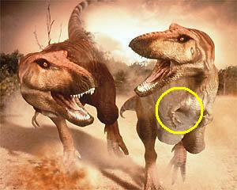
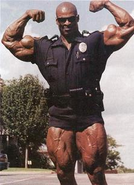

Cachas
 De: La Frikipedia, la enciclopedia extremadamente seria.
De: La Frikipedia, la enciclopedia extremadamente seria.
 Aquí vemos a 2 Tiranosaurios Rex hablando y enseñando el bíceps (redondel amarillo)
Se denomina el término de Cachas, o Cachasman, o Animal, o Becerro, o Caballo o Mazaroco a la persona que se mira al espejo 2 horas seguidas para ver si el tríceps o el bíceps le a crecido 1 centímetro o 2 después de haber estado en el gimnasio 4 horas sin parar. La cultura de los Cachas es muy amplia, mas que la de los mismismos Ronnie Coleman o lo que es lo mismo maquina de matar es el tipo mas cachas que hay en la tierra.
Alimentación
La alimentación de estos seres sobrenaturales es súper increíble, no paran en todo el día de cuidar su dieta especial que ni el doctor es capaz de saber lo que toman:
- 4 llemas de huevo metidas en un vasote (por que las manos son descomunales y si puede ser que el vaso sea echo de Titanio por que con tanto fuerza pueden partir el vaso).
- Una taza de leche con 1 cartón entero de los cereales Special K con el batido nutritivo con sabor a chocolate, fresa, etc... (se pueden comprar en las tiendas donde ponen los posters de los tíos cachas también sobrenaturales).
- A la hora de la comida un buen pedazo de carne si puede ser pechuga de pavo asada a lo natural pero con un poquito de sal pero no pasa nada si sube la presión arterial por que no hay nada pero nada que mate a un cachas.
- Después de una buena comida se mete un par de anabolizantes de caballos de carrera POSDATA: Gente normal no lo puede hacer, en caso de que lo hagan dense por muertos nada mas meter la pastilla en la boca.
- 45 minutos después de mirarse en el espejo se decide ir al gimnasio.
- Entrenas como un animal para estar cada día mas y mas fuerte hasta que te pongas como una nevera y no entres por la puerta como le pasa a Ronnie.
- Llegas a casa después de entrenar cansado pero eso si a los cachas el cansancio no les puede por que el cansancio nos tiene miedo, te bebes 2 litros de agua sin parar para recuperar lo gastado en el gimnasio.
- Mas tarde cuando tengas hambre sobre las 6 o 7 te tomas otro par de batidos si puede ser en gran cantidad por que son inmunes a todo, hasta la picadura de cobra.
- Y por ultimo y en la cena comes, pavo campofrío que esta a muy buen precio y sabe muy rico, con atún, arroz, queso...
Cosas de cachas
 Ronnie consultando sus bíceps para saber donde queda una calle
- Los cachas no golpean, hacen daño mortal.
- Si dos cachas se pelean es mejor prevenirlo (es imposible, se necesitaría a un parque de bomberos para detenerlos) por que puede haber una corrosión-térmico-nuclear si sus puños, bíceps, tríceps... se llegasen a tocar que seria peor que la bomba que cayo en Hiroshima
- Los cachas no follan, hacen el amor.
- Cuando un cachas hace el amor tiene que hacerlo con cuidado por que seria muy peligroso si le llegase a hacer daño a su compañera, por que desgarran tanta fuerza que…
- Si los terroristas tuviesen gente cachas serian invencibles ni Spiderman ni Batman podrian con ellos, solo Hulk pero Hulk y Ronnie llevan años buscándose sin parar y no se dan encontrado, pero cuando lo llegasen a hacer lo sabríamos al instante por que el núcleo de la tierra no aguantaría la presión de sus puñetazos.
- Cuando un cachas va por la calle y ve a un par de señoritas mirando para el se quita la chaqueta inmediatamente aunque nieve como si estuviese en Siberia y sonríe.
- Cuando un cachas pincha una rueda en su coche: 1º Se baja quita SOLO y EXCLUSIVAMENTE la rueda de repuesto, 2º Levanta el coche con el brazo derecho y al mismo tiempo enseñando el protenso y enorme bíceps, 3º Quitas los tornillos de las ruedas con los dedos indice y pulgar y con el meñique sujetando la llanta para no agacharte después, 4º Quitas la rueda y pones la otra y si ves que te están mirando observa atentamente y substituye el brazo derecho por el codo así poder levantar el pulgar y decir no pesa nada estoy bien y sonreír.
- Si un cachas va en moto y no lleva casco pobre el que se estrelle con el, podría partirle en dos el coche y traspasarlo y estropear la carretera de una forma espectacular.
- Un cachas necesita dos rotondas para dar la vuelta, una para el y otra para el coche.
- Cuando un cachas llega a una rotonda y ve que un coche ya esta dentro frena bruscamente con el freno de mano y si el de atrás que va ser que si que te toca la bocina en menos de bajarte y decirle todo el rollo de que casi provocas un accidente y tal, bajas la ventanilla y enseñas el bíceps para que el de atrás agache la cabeza y no haya ninguna discusión mas.
- Un cachas cuando va a correr, saca el culo para afuera, se inclina hacia abajo un poquito y saca pecho pero a lo animal y la espalda bien marcada y por ultimo y lo mas importante aparte del culo el balanceamiento de los brazos dejarlos muertos y ponerlos en un ángulo de 90º y moverlos de arriba abajo y en ese instante ponerlos duros para que se noten bien todos los músculos.
- Un cachas puede trabajar perfectamente de canguro con mas de 15 niños a la vez aunque sean de lo peor que haya, por que entre espalda y brazos puede soportar una tara total de 2 toneladas en este caso solo son superadas por Hulk, Ronnie y las Mujeres Maravillas Lucia la Piedra (Os quiero conocer mi msn es ezekielspress2@hotmail.com, tengo 19 pero no pasa nada.
- Los cachas no tienen miedo a la muerte es la muerte quien le tiene miedo a ellos.
- Cuando un cachas esta en un ciber siempre gana por que si no le dejáis ganar por muy malo que sea se enfada mucho y como un cachas se enfade es peor que la vez que Peter Griffin se olvido de como sentarse.
- Cuando un cachas va al baño la caquita sale tan fuerte y tan grande (por los batidos y anabolizantes) que ni el váter ni el atascador ni Don Limpio puede con la caquita.
- A los cachas les tienen prohibido sacarse sangre para donar, por que es tan pero tan fuerte que podría matar a alguien en caso de que otra persona se inyectase la sangre del cachas.
Enemigos
Los cachas no tienen enemigos personales pero solo 2 cachas que no se conocen de nada y se ven, empiezan a hacer un espectáculo de sacar pecho y subir el brazo para que vean el bíceps que tiene y después cuando lo pasas de largo marcar espalda, por si el otro mira para atrás que se asuste y lo mas importante sonreírle a las chicas que pasen.
Autor(es):
- Krusher
- Nexo
- Doctor grijander
- Ordoñez
- Aque
- Ezekielspress
- Alex2610
- Moryggy
- Azulejos
- Cibercrank
Frikipedia 2005-2016, Licencia
GFDL 1.2 - Extraído por FrikiLeaks